COOKT / VISUAL IDENTITY
A fresh take
on frozen
 01
01WHO IT IS FOR
People with
more appetite
than time.
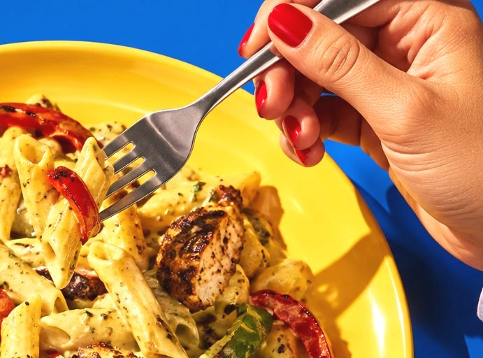
A generous identity for food with a point of view.
0201 / IDENTITY
Echo / The selected signature.
03C
K / T
The cut returns in C and K.
0402 / TYPOGRAPHY
Lemon
Chicken Orzo
Bright lemon.
Chicken and lemon orzo with sun-dried tomatoes.
Obviously / GT Alpina Italic / NB International Pro
0503 / COLOR
MINT #79E2AE
PAPRIKA #F54B32
INK #083C2F
0604 / ILLUSTRATION
A little more
flavor.
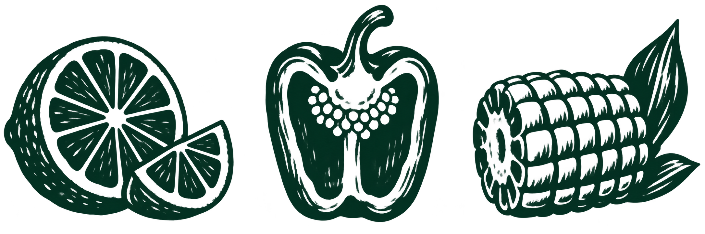
Bold ingredient cuts / A supporting voice, used sparingly.
07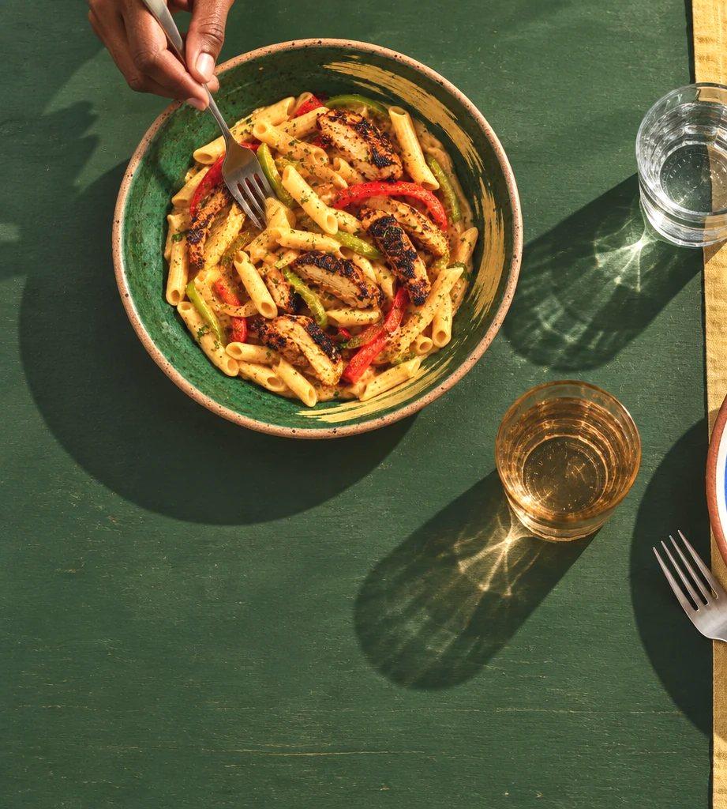
Food. Hands. Light.
08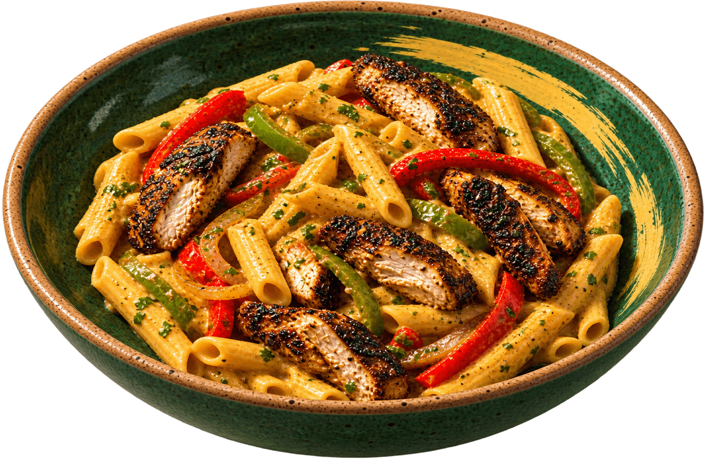
Jamaican
Rasta
Chicken Pasta
JERK SPICE / SCOTCH BONNET HEAT
09Paprika,
cayenne
and herbs.
Creamy Blackened
Chicken Pasta
10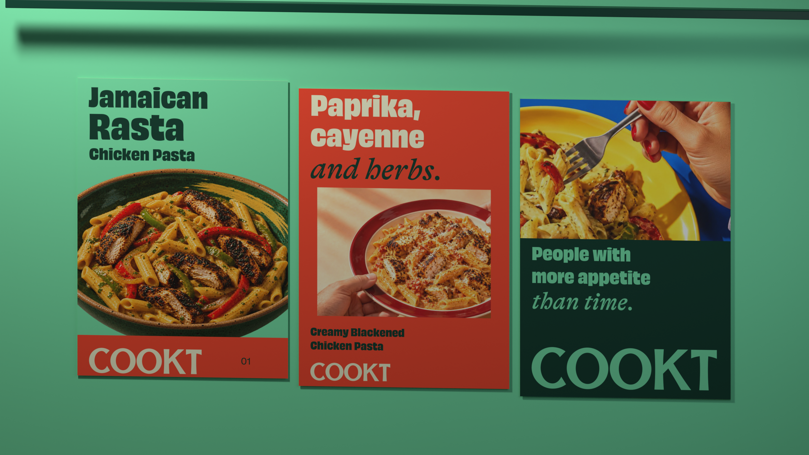
Campaign / Different compositions. One family.
1105 / PACKAGING
Four dishes.
One house.

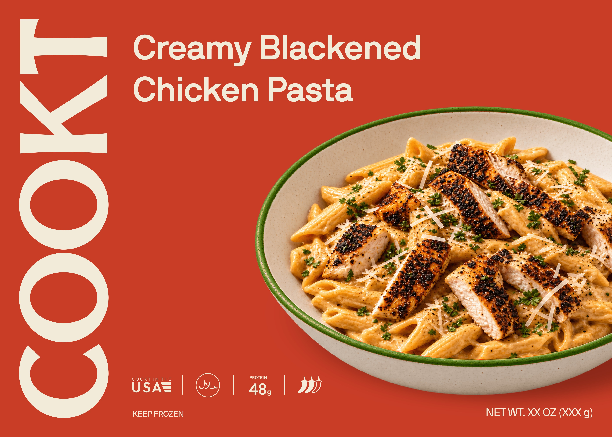

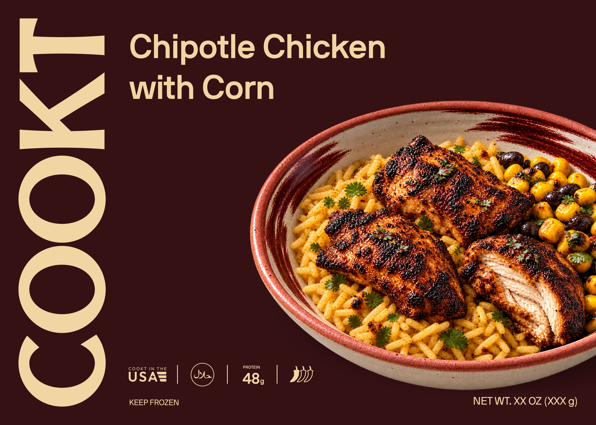
Supplied Echo review fronts / Production details remain open.
12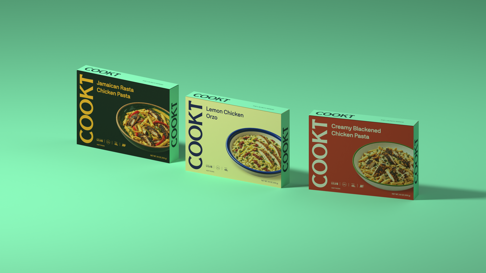
THE HOUSE LAYER
Mint continues onto top and side panels / Concept.
13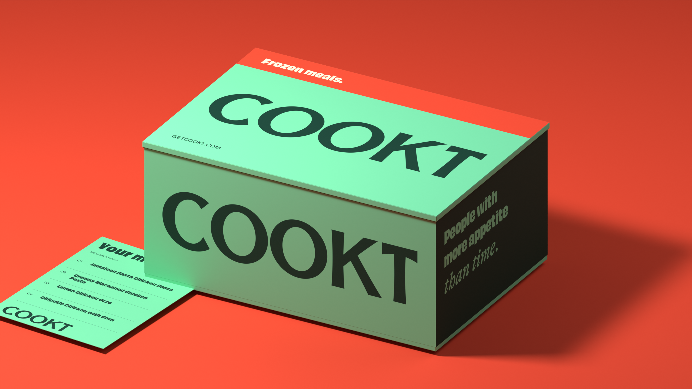
Delivery / Mint with a paprika edge.
14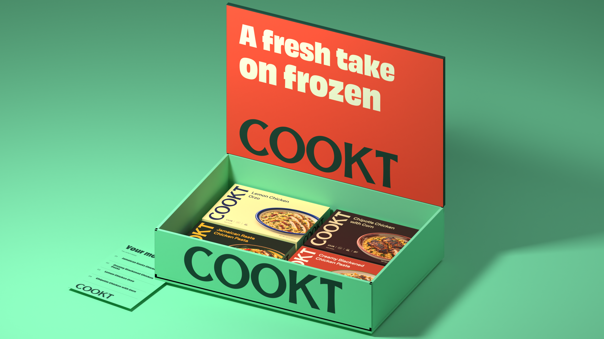
Delivery / The color changes when the box opens.
15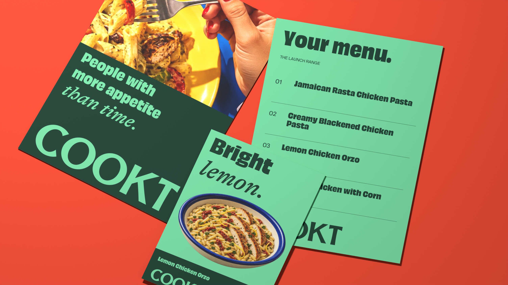
Menu insert / Food note / Campaign print.
1606 / DIGITAL

Lemon
Chicken Orzo
Bright lemon.
Sun-dried tomato.
A fresh take on frozen
Desktop / A menu with room for the food.
17MOBILE / EMAIL
Chicken and lemon orzo with sun-dried tomatoes.
Bright lemon.
Lemon Chicken Orzo
Chicken and lemon orzo with sun-dried tomatoes.
Select a dish / The same hierarchy carries into email.
1807 / SOCIAL
People with
more appetite
than time.
A fresh take on frozen
Smoky
chipotle.
Sweet corn.
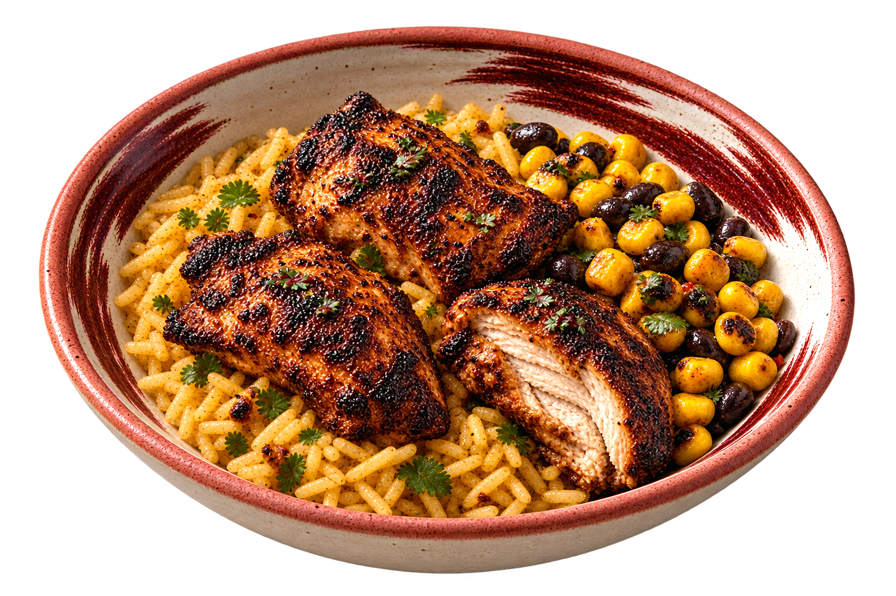
A statement. An appetite shot. A dish story.
1908 / SMALL SIZES
9:41
Tuesday,
October 6
Cookt
@getcookt
Search
Menu
Bag
Exact CO pair / Consistent functional icons.
2009 / MOTION
Lemon
Chicken Orzo
Bright lemon.
Color, food and flavor move together. The signature stays still.
2110 / SIGNATURE RULES
½ CAP HEIGHT
Keep it whole.
Preserve the supplied paths.
Allow half a cap height of clear space.
Recolor only. No stretching, tracing or reconstructed lettering.
2211 / VOICE
Smoky
chipotle.
Sweet corn.
Name the food. Describe the flavor. Keep it specific.
23A fresh take on frozen
COOKT / ECHO
24